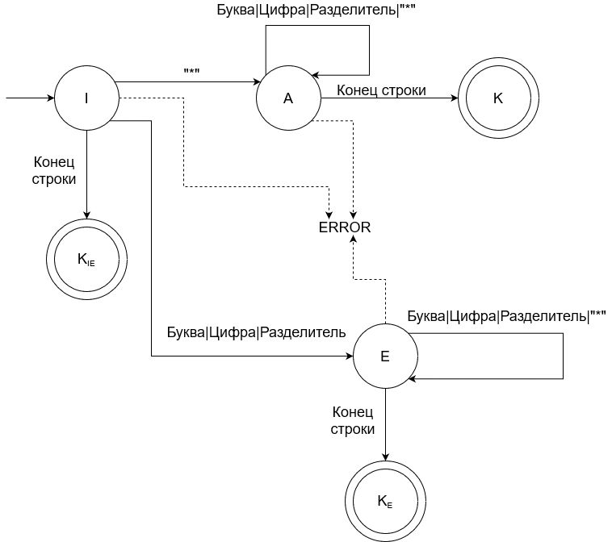

Так как грамматика G[I] является автоматной, то для ее анализа можно воспользоваться методом построения графа.
Описанные ранее правила вывода для грамматики G[I] реализованы на графе, изображенном ниже (см. рисунок).
Сплошные стрелки на графе показывают переход при синтаксически верных конструкциях. Пунктирные стрелки показывают переход в случае,
когда анализатору был подан символ, которого нет в определенном нами языке комментариев.
Анализ начинается из состояния I. Конечные состояния на графе изображены с помощью двойного круга.
